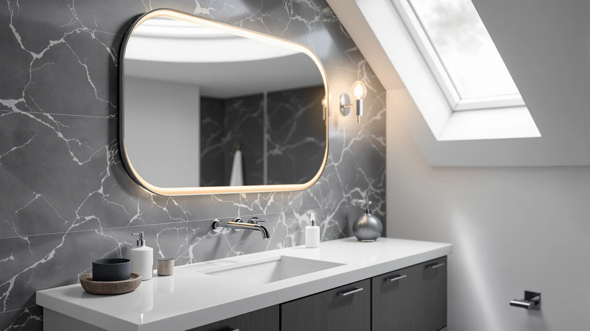

How to Clean Mirrors Bathroom Spotless: Complete Guide (2026)
Prices and picks verified as of September 2026. Independent, reader-supported reviews.


Things to Know Before You Buy
- White vinegar cuts through soap scum and mineral spots better than most bottled glass sprays, and a gallon costs less than a single bottle of glass cleaner.
- Paper towels leave lint behind that shows up as streaks once the glass dries. A microfiber cloth is the difference between a clean mirror and a spotless one.
- Spray your cloth, not the mirror. Overspray runs behind the frame and can loosen mounting adhesive or corrode a metal edge over time.
- Wipe top to bottom in straight lines instead of circles. Circular wiping hides streaks while the glass is wet and reveals them once it dries.
Knowing how to clean mirrors bathroom spotless takes less time than most people assume, and it rarely requires anything beyond what's already under your sink. Toothpaste flecks, hairspray film, and the hard water spots that creep in from steam build up fast in a small room, and wiping the glass with a damp towel usually just moves that grime around instead of removing it.
The method below uses a vinegar-based solution, two microfiber cloths, and a wiping pattern that keeps streaks from forming in the first place. You'll spend about 15 minutes on it, most of that on the buffing step, and the results hold up longer than a quick pass with a paper towel because you're lifting the residue off the glass instead of smearing it around.
What You'll Need
- Supplies: distilled white vinegar, distilled water, two or more microfiber cloths
- Tools: a spray bottle and a rubber-bladed squeegee (optional)
Step 1: Clear the mirror and knock off loose dust
Take down anything resting on the mirror's edge, like a razor holder or a suction-cup organizer, and set it aside so you can reach the full pane. Then run a dry microfiber cloth across the glass in one direction to pick up dust, hair, and the fine grit that settles as steam evaporates overnight.
This step matters more than it looks like it should. Wiping a dusty mirror with a wet cloth turns that dust into a thin paste that grinds against the glass and can leave faint scratches over time, especially on a mirror with any kind of coating. A 30-second dry wipe avoids that entirely and gets you a better result once you start cleaning how to clean mirrors bathroom spotless from step two onward.
Step 2: Mix a vinegar and water solution
Fill a spray bottle with equal parts distilled white vinegar and distilled water. Distilled water matters here: tap water carries its own minerals, and those minerals leave the same hard water spots you're trying to remove.
Vinegar's acidity breaks down the soap scum, toothpaste splatter, and mineral film that build up on a bathroom mirror faster than in almost any other room. It also evaporates without leaving a residue, which is the main reason it outperforms bottled glass cleaners that rely on ammonia and can leave a faint film behind.
Step 3: Spray the cloth, not the glass
Mist the vinegar solution directly onto a microfiber cloth until it's damp but not dripping, then wipe the mirror in straight, overlapping lines from the top down. Spraying the cloth instead of the glass keeps liquid from running behind a framed edge, where it can loosen mounting adhesive or corrode a metal frame over months of repeat cleanings.
Work in one direction rather than circles. Circular motions can hide a streak while the glass is still wet, and you won't notice it until the mirror dries and the light hits it at an angle. Straight, top-to-bottom passes make it obvious which sections you've already covered.
Step 4: Buff dry with a second microfiber cloth
Switch to a second, completely dry microfiber cloth and buff the glass right behind your spray pass, before the solution has a chance to air-dry. Vinegar and water dry fast in a warm bathroom, and any solution left to evaporate on its own tends to leave faint streaks where the last bit of moisture pooled.
Fold the cloth into quarters as you go so you're always buffing with a dry section. A squeegee works well here too, especially on a large mirror. Pull it down in one continuous stroke, wiping the blade dry between passes, and finish any remaining damp edges with the cloth.
Step 5: Treat stubborn spots individually
Some marks don't come off with a single wipe. Hairspray builds a waxy film that needs a slightly damper cloth and a bit more pressure. Dried toothpaste splatter softens if you let the vinegar solution sit on it for 20 to 30 seconds before wiping. Hard water spots near the bottom edge, where splashes collect, sometimes need a second full pass.
Avoid scraping at dried spots with a fingernail or an abrasive sponge. Bathroom mirrors, especially ones with a decorative or anti-fog coating, scratch more easily than people expect, and a scratch is permanent in a way that a water spot never is. If a spot won't lift after two passes, let it sit a minute longer rather than scrubbing harder.
Common Mistakes to Avoid
The biggest mistake is treating glass cleaner as optional and reaching for whatever's under the sink instead, including all-purpose cleaners with ammonia or bleach. Both can dull certain mirror coatings and, on a mirror with any decorative tint, gradually fade the finish. Stick to a dedicated glass cleaner or the vinegar solution described above.
Paper towels are the second most common culprit. They shed lint fibers that a microfiber cloth doesn't, and those fibers show up as tiny streaks once the glass dries, especially under bright vanity lighting. Buy a set of microfiber cloths and keep them separate from the ones you use on counters or floors, since dirt and grit from another surface can transfer to the glass and cause light scratching.
Spraying the mirror directly instead of the cloth is another common error. It seems faster, but the overspray runs down behind the frame and pools there. On a wood-framed mirror, that moisture warps the frame over time. On a metal frame, it accelerates the corrosion that eventually shows up as a dark edge around the glass.
Finally, skip the circular wiping motion. It's the default habit most people bring from cleaning windows, but on a smaller bathroom mirror, circular strokes tend to hide streaks while the glass is wet rather than remove them. Straight, overlapping passes from top to bottom give a more even, spotless result and make it easy to see exactly where you've already cleaned.
Our Top Picks
Regular cleaning keeps most mirrors looking new, but a scratched surface, a corroded edge, or a frame that no longer fits your bathroom isn't something a vinegar solution can fix. If you're at that point, these three hold up well to daily humidity and clean easily using the same method above.

Editor's Pick
SCWF-GZ 20x30 Oval Mirror Round
The rounded oval frame has no sharp corner for grime to collect in, and at 20 by 30 inches it fits a standard single-sink vanity without crowding the wall.
$39.99
Check Price on Amazon
Best Value
LOAAO 24"X36" Gold Bathroom Mirror
At 24 by 36 inches, this gold-framed mirror gives you more glass per dollar than most comparably sized options, and the metal frame wipes clean without the periodic resealing a wood frame needs.
$71.99
Check Price on Amazon
Premium Choice
Sweetcrispy 20"x30" Arched Gold Bathroom
The arched top adds a furniture-like detail a plain rectangle doesn't, and the metal edge resists the humidity swelling that eventually loosens wood-framed mirrors.
$29.99
Check Price on AmazonWhat's the best homemade cleaner for a bathroom mirror?
A 50/50 mix of distilled white vinegar and distilled water works as well as most bottled glass cleaners and leaves less residue than options with ammonia.
Can I use Windex on a bathroom mirror?
Yes, standard glass cleaner works fine on plain glass, though the ammonia in some formulas can dull certain anti-fog or decorative coatings over repeated use.
Frequently Asked Questions
What's the best homemade cleaner for a bathroom mirror?
Can I use Windex on a bathroom mirror?
How often should I clean a bathroom mirror?
Why does my mirror still streak after I clean it?
How do I remove hard water spots from a bathroom mirror?
Verdict
Once you know how to clean mirrors bathroom spotless, the process comes down to three habits: dry-dust before you spray, wipe with a microfiber cloth instead of paper towels, and buff the glass dry before the solution has a chance to air-dry into streaks. A vinegar and water solution handles the soap scum, toothpaste splatter, and hard water spots that build up in a bathroom faster than in any other room, and it costs a fraction of what a bottled glass cleaner does. Stick to a weekly routine and most mirrors stay clear indefinitely without ever needing anything stronger.
If cleaning no longer brings your mirror back, because the edge has corroded or the glass has scratched past the point a cloth can fix, replacing it is often simpler than restoring it. The SCWF-GZ oval mirror above is a reasonable starting point for a single vanity, and it cleans up with the exact method described here, since its rounded metal frame has no corner for grime or moisture to collect in.